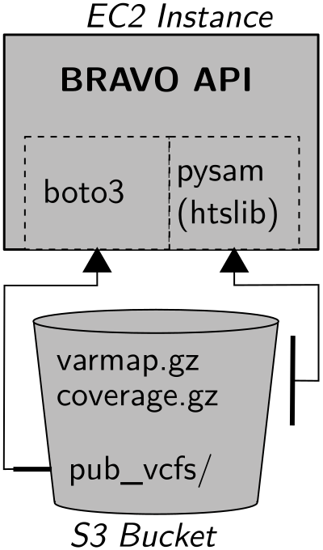

AWS IAM Woes
Colin Gross
2025-10-02
AWS IAM Woes
A small issue with IAM when using boto and pysam(htslib)
- AWS IAM
- Python Boto3
- HTSlib
HTSLib & Boto
- HTSLib is the underlying C library for working with VCFs and Tabix
indexed files.
- Pysam includes HTSlib as a dependency.
- Boto3 is the Amazon provided python library for using AWS APIs.
Relevant Stack

Public VCFs Feature
Provide trimmed down VCFs of BRAVO variants via pre-signed links to objects in S3 bucket.
- Prevent using links as data source for scripts.
- Enourage user to cache the data thamselves.
- Do not need to open access the bucket.
- Do not need a separate bucket.
Client Credentials Timeout
Boto3 Client used to generate signed urls eventually (6 hours) fails with expired credentials.
Expecting “Just Works”
Expect Boto3 library to grab credentials from the EC2 instance metadata.
Applications […] that run on the instance can then get automatic temporary security credentials from the instance metadata. You do not have to explicitly get the temporary security credentials.
Where Boto3 Gets Credentials
- Passing credentials as parameters in the boto.client() method
- Passing credentials as parameters when creating a Session object
- Environment variables
- Shared credential file (~/.aws/credentials)
- AWS config file (~/.aws/config)
- Assume Role provider
- Boto2 config file (/etc/boto.cfg and ~/.boto)
- Instance metadata service on an Amazon EC2 instance that has an IAM role configured.
HTSlib S3 Plugin
The S3 plugin allows htslib file functions to communicate with servers that use the AWS S3 protocol.
Credentials Service
S3 Plugin docs
#!/bin/sh
instance='http://169.254.169.254'
tok_url="$instance/latest/api/token"
ttl_hdr='X-aws-ec2-metadata-token-ttl-seconds: 10'
creds_url="$instance/latest/meta-data/iam/security-credentials"
key1='aws_access_key_id = \(.AccessKeyId)\n'
key2='aws_secret_access_key = \(.SecretAccessKey)\n'
key3='aws_session_token = \(.Token)\n'
key4='expiry_time = \(.Expiration)\n'
while true; do
token=`curl -X PUT -H "$ttl_hdr" "$tok_url"`
tok_hdr="X-aws-ec2-metadata-token: $token"
role=`curl -H "$tok_hdr" "$creds_url/"`
expires='now'
( curl -H "$tok_hdr" "$creds_url/$role" \
| jq -r "\"${key1}${key2}${key3}${key4}\"" > credentials.new ) \
&& mv -f credentials.new credentials \
&& expires=`grep expiry_time credentials | cut -d ' ' -f 3-`
if test $? -ne 0 ; then break ; fi
expiry=`date -d "$expires - 3 minutes" '+%s'`
now=`date '+%s'`
test "$expiry" -gt "$now" && sleep $((($expiry - $now) / 2))
sleep 30
doneService grabs EC2 Credentials
instance='http://169.254.169.254'
creds_url="$instance/latest/meta-data/iam/security-credentials"And writes them to a file which gets re-read when credentials are needed.
Credentials File
- Location controlled by environment variable
AWS_SHARED_CREDENTIALS_FILE. - Boto3 also reads this environment variable.

Problem Summary
- HTSlib service writes and re-reads credentials file.
- Boto3 reads, but never re-reads, credentials file.
- When credentials expire, HTSLib re-reads new credentials file.
- Boto3 continues with expired credentials.
A Solution
Avoid putting the credentials in a file that Boto3 will use.
- Boto3 will use instance credentials and reaquire them.
- HTSlib can continue reading and re-reading from the file.
Non-shared Credentials Location
- HTSlib will use a config from a third party tool, s3cmd.
- s3cfg config specified by
HTS_S3_S3CFG
End
End of Slides